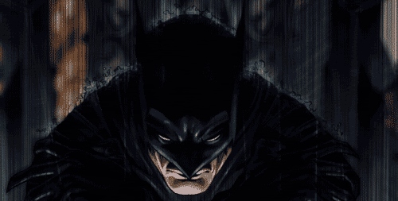

THE DARK KNIGHT
Summary
I am a fictional superhero appearing in American comic books published by DC Comics. TI was created by artist Bob Kane and writer Bill Finger, and first appeared in Detective Comics #27 (May 1939). I am also referred to by such epithets as the "Caped Crusader", the "Dark Knight", and the "World's Greatest Detective".
An American cultural icon, I have been licensed and adapted into a variety of media, from radio to television and film, and appear on a variety of merchandise sold all over the world, such as toys and video games. I have also intrigued psychiatrists, with many trying to understand my psyche. In May 2011, I was placed second on IGN's Top 100 Comic Book Heroes of All Time.
The who's who of holloywood including Lewis Wilson, Robert Lowery, Adam West, Michael Keaton, Val Kilmer, George Clooney and Christian Bale have portrayed me on television and film. Ben Affleck is lining up to try next.
Experience
The Batman
I am the self appointed protector of Gotham city. I believe that its not who I am underneath but what I do that defines me. In the past decade, i had defeated every super-villain who has stood against Gotham. Recent examples include the Joker, Bane and Ra's al Ghul. This year, I am looking for a bigger challenge. Watch me fight Superman, my direct competitor and arch nemesis in the superhero rankings. This March I will finally defeat him and rightfully claim the No. 1 position in IGN's Top 100 Comic Book Heros of All Time.
Bruce Wayne, Billionaire and Philanthropist
I am accomplished at pretending to lead one of the worlds largest organizations Wayne enterprises. I am also known for the parties I throw and the women I date.
Skills
- Martial Arts
- Jumping of buildings
- Using the Force (that's my secret)